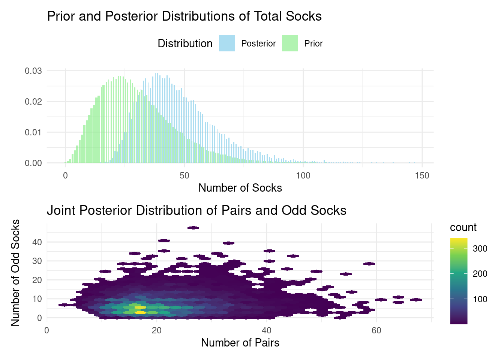

In the bustling marketplace of ideas that is modern data science, Bayesian statistics stands out as a powerful and intuitive approach to understanding uncertainty and making decisions. For business data scientists, it offers a flexible framework that naturally incorporates prior knowledge, updates beliefs based on new evidence, and quantifies uncertainty in a way that’s both mathematically rigorous and intuitively appealing.
Now, let’s set some expectations. To truly thrive as a business data scientist, you’ll need more than a passing familiarity with statistics. Think of it this way: an analyst knows how to use a calculator, while a data scientist knows how that calculator works—and can even build one from scratch to tackle the specific problem at hand. Let me be clear: this chapter isn’t a course in calculator construction. We won’t delve into the nuts and bolts of how it’s built, or even all the inner workings. Instead, our aim is to convince you that this particular calculator is worth learning more about. We want to spark your curiosity, to show you why this tool deserves a prime spot in your data science toolbox.
In this chapter, we’ll explore the basics of Bayesian statistics, delve into Bayes’ rule, and examine why this paradigm is particularly well-suited for business applications.
4.1 The Essence of Bayesian Thinking
At its core, Bayesian statistics is about updating our beliefs in light of new evidence. This process mirrors how we often think about problems in business: we start with some prior knowledge or assumptions, gather data, and then update our understanding based on what we’ve learned.
As Kruschke and Liddell (2018) eloquently put it, “The main idea of Bayesian analysis is simple and intuitive. There are some data to be explained, and we have a set of candidate explanations. Before knowing the new data, the candidate explanations have some prior credibilities of being the best explanation. Then, when given the new data, we shift credibility toward the candidate explanations that better account for the data, and we shift credibility away from the candidate explanations that do not account well for the data.”
This perspective highlights a fundamental principle of Bayesian analysis: it’s a process of reallocating credibility across possibilities. In a business context, these “possibilities” might be different strategies, market scenarios, or parameter values in a model. As we gather more data, we adjust our beliefs about which possibilities are more or less likely to be true.
The Bayesian approach contrasts with the more traditional frequentist statistics in a fundamental way. While frequentists treat parameters as fixed (but unknown) quantities and data as random, Bayesians view parameters as random variables and data as fixed once observed. This shift in perspective leads to more intuitive interpretations of statistical results and allows for the incorporation of prior knowledge into our analyses.
4.2 Bayes’ Rule: The Heart of Bayesian Statistics
The cornerstone of Bayesian statistics is Bayes’ rule, named after the Reverend Thomas Bayes. This elegant formula shows us how to update probabilities when we receive new information. In its simplest form, Bayes’ rule is expressed as:
\[
P(A|B) = \frac{P(B|A)P(A)}{P(B)}
\]
Where:
\(P(A|B)\) is the posterior probability of A given B
\(P(B|A)\) is the likelihood of B given A
\(P(A)\) is the prior probability of A
\(P(B)\) is the marginal likelihood of B
In the context of parameter estimation, which is often our goal in business data science, we can rewrite Bayes’ rule as:
\(\theta\) represents our parameter(s) of interest
\(D\) represents our observed data
\(P(\theta|D)\) is the posterior distribution of our parameter given the data
\(P(D|\theta)\) is the likelihood of the data given the parameter
\(P(\theta)\) is our prior distribution for the parameter
\(P(D)\) is the marginal likelihood of the data
This formulation clearly illustrates the process of reallocating credibility. We start with our prior beliefs about the parameters \(P(\theta)\), consider how likely the data are given those parameters \(P(D|\theta)\), and end up with an updated (posterior) belief about the parameters \(P(\theta|D)\).
4.3 The Case of the Declining User Engagement
Even if you haven’t formally studied Bayesian statistics, your brain is already wired to think like a Bayesian. To illustrate how this intuitive approach can be applied to real-world business problems, let’s consider a scenario that data scientists in the tech sector frequently encounter: investigating a sudden decline in user engagement and its potential impact on revenue.
Imagine you’re a business data scientist at a high-growth tech company that offers a subscription-based productivity app. You’ve noticed a concerning trend: daily active users (DAU) have dropped by 15% over the past month, and this is starting to affect revenue. Your task is to identify the most likely cause of this engagement drop and recommend actions to reverse the trend.
Let’s say we have four main hypotheses for the cause of the declining engagement:
A recent feature update (Feature)
Increased competition in the market (Competition)
Seasonal variation (Seasonality)
Changes in marketing spend (Marketing)
Before diving into the data, you have some prior beliefs about the likelihood of each cause, based on your experience and industry knowledge:
Feature: 35% (feature updates can sometimes negatively impact user experience)
Competition: 25% (the market is becoming more saturated)
Seasonality: 20% (there’s often a summer slowdown in productivity app usage)
Marketing: 20% (marketing budgets have been fluctuating)
This is your prior distribution. Now, as you investigate, you gather evidence:
User feedback shows mixed reactions to the recent feature update, with some users reporting confusion about the new interface.
Market research indicates that while a major competitor launched a new product, it hasn’t gained significant market share yet.
Historical data shows a similar dip in engagement during the same period last year, though not as pronounced.
Marketing spend has remained consistent over the past quarter.
As you collect this evidence, you update your beliefs about the likelihood of each cause. This is where Bayesian reasoning comes into play, allowing you to reallocate credibility based on the new information.
After considering the evidence, you might update your beliefs as follows:
Feature: 60% (user feedback suggests this is a significant factor)
Competition: 8% (less likely given the market research)
Seasonality: 30% (historical data supports this as a contributing factor)
Marketing: 2% (unlikely given consistent spend)
This is your posterior distribution. You’ve reallocated credibility based on the evidence, increasing your belief that the feature update and seasonality are the primary causes of the engagement drop.
4.4 The Case of Karl Broman’s Socks: A Bayesian Adventure in Tiny Data
Karl Broman’s Socks
To illustrate the power of Bayesian thinking, even with limited data, let’s consider an intriguing example from Rasmus Bååth’s Blog, which he calls “Tiny Data, Approximate Bayesian Computation and the Socks of Karl Broman” (see original blog post). The problem is deceptively simple: Given that Karl Broman has 11 unique socks in his laundry, how many socks does he have in total? This is a perfect example of what Bååth calls “Tiny Data” - a situation where we have very limited information but still need to make an inference. It’s a scenario that business data scientists often face, where decisions need to be made with incomplete information.
The Bayesian Approach to the Sock Problem
Bååth tackles this problem using Approximate Bayesian Computation (ABC), an intuitive albeit computationally intensive method (see Rubin (1984)).
In this Bayesian adventure, we begin with two crucial pieces of information, encoded as prior probability distributions. The number of socks is a count variable, so we’ll employ a negative binomial data generating process. (We delve into this topic in more detail in Section 17.3.) For now, let’s follow Bååth’s lead and set (\(\mu = 30\)) and (size = 4).
library(ggplot2)# Dataframe of possible sock countssock_counts <-data.frame(n_socks =0:100)# Calculate probabilities from the negative binomial distributionsock_counts$probability <-dnbinom(sock_counts$n_socks, mu =30, size =4)# Create the histogramggplot(sock_counts, aes(x = n_socks, y = probability)) +geom_col(fill ="skyblue", color ="black") +scale_y_continuous(labels = scales::percent) +theme_minimal() +labs(x ="Total Number of Socks", y ="Probability") +ggtitle("Prior Distribution for Total Number of Socks")
Next, we need to specify our beliefs about the proportion of socks that have a pair. For this, we can use a beta data generating process. To remain consistent with the blog post, we’ll set shape1 = 15 and shape2 = 2. This distribution is skewed towards higher values, suggesting a belief that most socks in a laundry pile are likely to be paired. The parameters indicate an expectation around 0.88, reflecting the common experience that unmatched socks are less frequent.
# Create a sequence of proportions from 0 to 1proportions <-seq(0, 1, length.out =100)# Calculate density values from the beta distributiondensity_values <-dbeta(proportions, shape1 =15, shape2 =2)# Create the density plotggplot(data.frame(proportion = proportions, density = density_values),aes(x = proportion, y = density)) +geom_line(color ="darkgreen") +theme_minimal() +labs(x ="Proportion of Paired Socks", y ="Density") +ggtitle("Prior Distribution for Proportion of Paired Socks")
These prior distributions encapsulate our initial beliefs before we observe any data. The Bayesian approach elegantly allows us to update these beliefs based on the evidence, leading to more informed posterior distributions.
Now, let’s craft the R code for simulating draws from this data generating process.
library(dplyr)library(furrr)library(patchwork)set.seed(123)# Enable parallel processing with the number of cores availableplan(multisession, workers =availableCores())# Define the number of socks pickedn_picked <-11# Improved simulation functionsimulate_socks <-function(n_picked) {# Generate total number of socks from prior n_socks <-rnbinom(1, mu =30, size =4)# Generate proportion of paired socks from prior prop_pairs <-rbeta(1, shape1 =15, shape2 =2)# Calculate number of pairs and odd socks n_pairs <-round(floor(n_socks /2) * prop_pairs) n_odd <- n_socks - n_pairs *2# Simulate picking socks socks <-rep(seq_len(n_pairs + n_odd), rep(c(2, 1), c(n_pairs, n_odd))) picked_socks <-sample(socks, size =min(n_picked, n_socks)) sock_counts <-table(picked_socks)# Return resultstibble(unique =sum(sock_counts ==1),pairs =sum(sock_counts ==2),n_socks = n_socks,n_pairs = n_pairs,n_odd = n_odd,prop_pairs = prop_pairs )}# Run simulationsn_sims <-100000sock_sim <-future_map_dfr(1:n_sims, ~simulate_socks(n_picked),.options =furrr_options(seed =123))# Filter for matching simulations (11 unique socks, 0 pairs)post_samples <- sock_sim %>%filter(unique ==11, pairs ==0)
This code implements the ABC method, which is a perfect illustration of the “reallocation of credibility across possibilities” that Kruschke and Liddell describe:
We define prior distributions for the total number of socks (negative binomial) and the proportion of paired socks (beta). These represent our initial beliefs about the possibilities.
We create a generative model that simulates picking socks from a laundry pile.
We run this simulation many times (100,000 in this case), each time generating a possible scenario.
We keep only those simulations that match our observed data (11 unique socks, 0 pairs). This step is where we reallocate credibility, focusing on the possibilities that are consistent with our observation.
We analyze the results by calculating median values from the retained samples, which represent our updated beliefs.
Visualizing the Results
# Prepare data for plottingprior_data <- sock_sim %>%count(n_socks) %>%mutate(prop = n /sum(n),type ="Prior")posterior_data <- post_samples %>%count(n_socks) %>%mutate(prop = n /sum(n),type ="Posterior")plot_data <-bind_rows(prior_data, posterior_data)# Plot prior and posterior distributionsp1 <-ggplot(plot_data, aes(x = n_socks, y = prop, fill = type)) +geom_col(position ="dodge", alpha =0.7) +scale_fill_manual(values =c("Prior"="lightgreen", "Posterior"="skyblue")) +labs(title ="Prior and Posterior Distributions of Total Socks",x ="Number of Socks", y ="", fill ="Distribution") +theme_minimal() +theme(legend.position ="top")# Plot the posterior distribution of pairs and odd socksp2 <-ggplot(post_samples, aes(x = n_pairs, y = n_odd)) +geom_hex(bins =30) +scale_fill_viridis_c() +labs(title ="Joint Posterior Distribution of Pairs and Odd Socks",x ="Number of Pairs", y ="Number of Odd Socks") +theme_minimal()# Combine plotsp1 / p2

Results and Interpretation
After running this model, our best guess (median of the posterior) is that Karl Broman has approximately:
Remarkably, when Karl later revealed the actual numbers, it turned out there were 21 pairs and 3 odd socks, totaling 45 socks. The estimate is surprisingly close, considering we only had one piece of information to work with! The visualizations provide additional insights:
The first plot shows how our beliefs about the total number of socks changed from the prior (green) to the posterior (blue) distribution after incorporating the data. This is a clear visualization of the reallocation of credibility across possibilities. The second plot illustrates the joint posterior distribution of pairs and odd socks, showing the range of plausible combinations given our model and data.
This example beautifully illustrates several key aspects of Bayesian thinking:
Incorporation of prior knowledge: The model uses reasonable priors based on general knowledge about sock ownership.
Handling uncertainty: The posterior distribution provides a range of plausible values, not just a point estimate.
Learning from limited data: Even with just one piece of information (11 unique socks), we can make a surprisingly accurate inference.
Flexibility: The ABC approach allows us to work with a complex model that would be difficult to handle with traditional methods.
Reallocation of credibility: We start with a wide range of possibilities and narrow down to those most consistent with our observation.
In business contexts, we often face similar situations - limited data combined with domain expertise or prior experience. The sock example, while whimsical, demonstrates how Bayesian methods can be powerful in such real-world scenarios. As we progress through this book, we’ll explore how these principles can be applied to more complex business problems.
As Kruschke and Liddell (2018) point out, one of the key advantages of Bayesian analysis is that “the posterior distribution can be directly examined to see which parameter values are most credible, and what range of parameter values covers the most credible values.” This direct interpretation is particularly valuable in business settings, where we often need to communicate results to non-technical stakeholders.
For instance, in our sock example, we can straightforwardly say that “there’s a 95% probability that the total number of socks is between 24 and 86.” This statement is intuitive and directly addresses the uncertainty in our estimate, which is crucial for informed decision-making. Additionally, we can quantify probabilities for specific scenarios, such as: “The probability that there are at least 15 pairs is 78%.”
Moreover, Bayesian methods naturally handle the “small data” scenarios that are common in business. While big data gets a lot of attention, many important business decisions are made with limited information. The Bayesian framework allows us to start with prior knowledge (perhaps based on industry benchmarks or previous experience), update this with whatever data is available, and still produce meaningful results.
A Note on Priors
It’s important to remember that the less data you have, the more influential your priors become. Transparency about your priors is essential, as is investigating the sensitivity of your findings to different prior choices. However, don’t shy away from using informative priors when justified by data. The interactive dashboard below utilizes {shinylive} (see Schloerke et al. (2024)) to run these simulations directly in your browser, allowing you to experiment with various priors and observe their impact.
#| standalone: true
#| viewerHeight: 800
library(shiny)
library(ggplot2)
library(dplyr)
library(furrr)
library(shinybusy)
library(shinydashboard)
# Enable parallel processing with the number of cores available
plan(multisession, workers = availableCores())
# Define the number of socks picked
n_picked <- 11
simulate_socks <- function(n_picked, mu, size, shape1, shape2) {
# Generate total number of socks from prior
n_socks <- rnbinom(1, mu = mu, size = size)
# Generate proportion of paired socks from prior
prop_pairs <- rbeta(1, shape1 = shape1, shape2 = shape2)
# Calculate number of pairs and odd socks
n_pairs <- round(floor(n_socks / 2) * prop_pairs)
n_odd <- n_socks - n_pairs * 2
# Simulate picking socks
socks <- rep(seq_len(n_pairs + n_odd), rep(c(2, 1), c(n_pairs, n_odd)))
picked_socks <- sample(socks, size = min(n_picked, n_socks))
sock_counts <- table(picked_socks)
# Return results
tibble(
unique = sum(sock_counts == 1),
pairs = sum(sock_counts == 2),
n_socks = n_socks,
n_pairs = n_pairs,
n_odd = n_odd,
prop_pairs = prop_pairs
)
}
ui <- dashboardPage(
skin = "black",
dashboardHeader(title = "Karl's Socks"),
dashboardSidebar(
numericInput(
inputId = "seed",
label = "Random Seed",
value = 123,
min = 1,
step = 1
),
numericInput(
inputId = "n_sims",
label = "Number of Simulations",
value = 10000,
min = 100,
step = 100
),
sliderInput(
inputId = "mu",
label = "mu",
min = 15,
max = 60,
value = 40,
step = 1
),
sliderInput(
inputId = "size",
label = "Size",
min = 3,
max = 10,
value = 4,
step = 1
),
sliderInput(
inputId = "shape1",
label = "Shape 1",
min = 2,
max = 20,
value = 15,
step = 1
),
sliderInput(
inputId = "shape2",
label = "Shape 2",
min = 2,
max = 8,
value = 2,
step = 1
),
actionButton("run_sim", "Run Simulation")
),
dashboardBody(
use_busy_spinner(spin = "fading-circle"),
fluidRow(
box(
title = "Prior Distribution for Total Number of Socks",
status = "danger", solidHeader = TRUE,
collapsible = TRUE,
plotOutput("prior_socks")
),
box(
title = "Prior Distribution for Proportion of Paired Socks",
status = "danger", solidHeader = TRUE,
collapsible = TRUE,
plotOutput("prior_prop")
)
),
fluidRow(
box(
title = "Prior and Posterior Distributions of Total Socks",
status = "danger", solidHeader = TRUE,
collapsible = TRUE,
plotOutput("distribution_plot")
),
box(
title = "Joint Posterior Distribution of Pairs and Odd Socks",
status = "danger", solidHeader = TRUE,
collapsible = TRUE,
plotOutput("joint_plot")
)
),
fluidRow(
valueBoxOutput("pr_pairs")
)
)
)
server <- function(input, output) {
sock_sim <- eventReactive(input$run_sim, {
show_modal_spinner()
on.exit(remove_modal_spinner())
set.seed(input$seed)
local_mu <- input$mu
local_size <- input$size
local_shape1 <- input$shape1
local_shape2 <- input$shape2
future_map_dfr(1:input$n_sims,
~simulate_socks(n_picked = 11,
mu = local_mu,
size = local_size,
shape1 = local_shape1,
shape2 = local_shape2),
.options = furrr_options(seed = 123))
})
# Filter for matching simulations (11 unique socks, 0 pairs)
post_samples <- reactive({
sock_sim() %>%
filter(unique == 11, pairs == 0)
})
output$pr_pairs <- renderValueBox({
req(post_samples())
valueBox(
scales::percent(mean(post_samples()$n_pairs > 14)),
"Pr[# Pairs > 14]", icon = icon("socks"),
color = "red"
)
})
# Prepare data for plotting
prior_data <- reactive({
sock_sim() %>%
count(n_socks) %>%
mutate(prop = n / sum(n),
type = "Prior")
})
posterior_data <- reactive({
if(nrow(post_samples()) == 0) {
return(tibble(n_socks = numeric(), prop = numeric(), type = character()))
}
post_samples() %>%
count(n_socks) %>%
mutate(prop = n / sum(n),
type = "Posterior")
})
output$prior_socks <- renderPlot({
# Dataframe of possible sock counts
sock_counts <- data.frame(n_socks = 0:100)
# Calculate probabilities from the negative binomial distribution
sock_counts$probability <- dnbinom(sock_counts$n_socks,
mu = input$mu,
size = input$size)
# Create the histogram
ggplot(sock_counts, aes(x = n_socks, y = probability)) +
geom_col(fill = "skyblue", color = "black")+
scale_y_continuous(labels = scales::percent) +
theme_minimal() +
labs(x = "Total Number of Socks", y = "Probability")
})
output$prior_prop <- renderPlot({
# Create a sequence of proportions from 0 to 1
proportions <- seq(0, 1, length.out = 100)
# Calculate density values from the beta distribution
density_values <- dbeta(proportions, shape1 = input$shape1,
shape2 = input$shape2)
# Create the density plot
ggplot(data.frame(proportion = proportions, density = density_values),
aes(x = proportion, y = density)) +
geom_line(color = "darkgreen") +
theme_minimal() +
labs(x = "Proportion of Paired Socks", y = "Density")
})
output$distribution_plot <- renderPlot({
req(prior_data(), posterior_data())
plot_data <- bind_rows(prior_data(), posterior_data())
ggplot(plot_data, aes(x = n_socks, y = prop, fill = type)) +
geom_col(position = "dodge", alpha = 0.7) +
scale_fill_manual(values = c("Prior" = "lightgreen", "Posterior" = "skyblue")) +
scale_y_continuous(labels = scales::percent) +
labs(x = "Number of Socks", y = "Probability", fill = "Distribution") +
theme_minimal() +
theme(legend.position = "top")
})
output$joint_plot <- renderPlot({
req(post_samples())
if(nrow(post_samples()) > 0) {
ggplot(post_samples(), aes(x = n_pairs, y = n_odd)) +
geom_hex(bins = 30) +
scale_fill_viridis_c() +
labs(x = "Number of Pairs", y = "Number of Odd Socks") +
theme_minimal()
} else {
ggplot() +
annotate("text", x = 0.5, y = 0.5, label = "No matching simulations found") +
theme_void()
}
})
}
shinyApp(ui, server)
4.5 Conclusion
Bayesian statistics offers a powerful and intuitive framework for business data science, aligning closely with how businesses make decisions. By incorporating prior knowledge, we can update our beliefs based on evidence and quantify uncertainty in a natural way. The concept of reallocating credibility across possibilities provides an intuitive way to think about learning from data.
Furthermore, Bayesian methods are particularly well-suited to the “small data” scenarios often encountered in business. While “big data” garners much attention, many crucial business decisions hinge on limited information. The Bayesian framework allows us to begin with prior knowledge, update it with available data, and then communicate our findings in plain language.
In essence, Bayesian statistics provides a flexible and powerful approach for tackling the complex and often uncertain world of business decision-making.
Learn more
Kruschke and Liddell (2018) Bayesian data analysis for newcomers.
McElreath (2018) Statistical Rethinking: A Bayesian Course with Examples in R and Stan
Gelman, A., J. B. Carlin, H. S. Stern, D. B. Dunson, A. Vehtari, and D. B. Rubin. 2013. Bayesian Data Analysis, Third Edition. Chapman & Hall/CRC Texts in Statistical Science. Taylor & Francis. http://www.stat.columbia.edu/~gelman/book/.
Kruschke, John K, and Torrin M Liddell. 2018. “Bayesian Data Analysis for Newcomers.”Psychonomic Bulletin & Review 25 (1): 155–77. https://doi.org/10.3758/s13423-017-1272-1.
McElreath, R. 2018. Statistical Rethinking: A Bayesian Course with Examples in r and Stan. Chapman & Hall/CRC Texts in Statistical Science. CRC Press. https://books.google.com/books?id=T3FQDwAAQBAJ.
Rubin, Donald B. 1984. “Bayesianly Justifiable and Relevant Frequency Calculations for the Applied Statistician.”The Annals of Statistics 12 (4): 1151–72. https://doi.org/10.1214/aos/1176346785.
Schloerke, Barret, Winston Chang, George Stagg, and Garrick Aden-Buie. 2024. Shinylive: Run ’Shiny’ Applications in the Browser. https://posit-dev.github.io/r-shinylive/.
Source Code
---title: "Bayes 101"filters: - shinylive---{.lightbox}In the bustling marketplace of ideas that is modern data science, Bayesianstatistics stands out as a powerful and intuitive approach to understandinguncertainty and making decisions. For business data scientists, it offers aflexible framework that naturally incorporates prior knowledge, updates beliefsbased on new evidence, and quantifies uncertainty in a way that's bothmathematically rigorous and intuitively appealing.Now, let's set some expectations. To truly thrive as a business data scientist,you'll need more than a passing familiarity with statistics. Think of it thisway: an analyst knows how to use a calculator, while a data scientist knows howthat calculator works—and can even build one from scratch to tackle the specificproblem at hand. Let me be clear: this chapter isn't a course in calculatorconstruction. We won't delve into the nuts and bolts of how it's built, or evenall the inner workings. Instead, our aim is to convince you that this particularcalculator is worth learning more about. We want to spark your curiosity, toshow you why this tool deserves a prime spot in your data science toolbox.In this chapter, we'll explore the basics of Bayesian statistics, delve intoBayes' rule, and examine why this paradigm is particularly well-suited forbusiness applications.## The Essence of Bayesian ThinkingAt its core, Bayesian statistics is about updating our beliefs in light of newevidence. This process mirrors how we often think about problems in business: westart with some prior knowledge or assumptions, gather data, and then update ourunderstanding based on what we've learned.As @kruschke2018bayesian eloquently put it, "The main idea of Bayesian analysisis simple and intuitive. There are some data to be explained, and we have a setof candidate explanations. Before knowing the new data, the candidateexplanations have some prior credibilities of being the best explanation. Then,when given the new data, we shift credibility toward the candidate explanationsthat better account for the data, and we shift credibility away from thecandidate explanations that do not account well for the data."This perspective highlights a fundamental principle of Bayesian analysis: it's aprocess of reallocating credibility across possibilities. In a business context,these "possibilities" might be different strategies, market scenarios, orparameter values in a model. As we gather more data, we adjust our beliefs aboutwhich possibilities are more or less likely to be true.The Bayesian approach contrasts with the more traditional frequentist statisticsin a fundamental way. While frequentists treat parameters as fixed (but unknown)quantities and data as random, Bayesians view parameters as random variables anddata as fixed once observed. This shift in perspective leads to more intuitiveinterpretations of statistical results and allows for the incorporation of priorknowledge into our analyses.## Bayes' Rule: The Heart of Bayesian StatisticsThe cornerstone of Bayesian statistics is Bayes' rule, named after the ReverendThomas Bayes. This elegant formula shows us how to update probabilities when wereceive new information. In its simplest form, Bayes' rule is expressed as:$$P(A|B) = \frac{P(B|A)P(A)}{P(B)}$$Where: - $P(A|B)$ is the posterior probability of A given B - $P(B|A)$ is the likelihood of B given A - $P(A)$ is the prior probability of A - $P(B)$ is the marginal likelihood of BIn the context of parameter estimation, which is often our goal in business datascience, we can rewrite Bayes' rule as:$$P(\theta|D) = \frac{P(D|\theta)P(\theta)}{P(D)}$$Where: - $\theta$ represents our parameter(s) of interest - $D$ represents our observed data - $P(\theta|D)$ is the posterior distribution of our parameter given the data - $P(D|\theta)$ is the likelihood of the data given the parameter - $P(\theta)$ is our prior distribution for the parameter - $P(D)$ is the marginal likelihood of the dataThis formulation clearly illustrates the process of reallocating credibility. Westart with our prior beliefs about the parameters $P(\theta)$, consider howlikely the data are given those parameters $P(D|\theta)$, and end up with anupdated (posterior) belief about the parameters $P(\theta|D)$. ## The Case of the Declining User EngagementEven if you haven't formally studied Bayesian statistics, your brain is alreadywired to think like a Bayesian. To illustrate how this intuitive approach can beapplied to real-world business problems, let's consider a scenario that datascientists in the tech sector frequently encounter: investigating a suddendecline in user engagement and its potential impact on revenue.Imagine you're a business data scientist at a high-growth tech company thatoffers a subscription-based productivity app. You've noticed a concerning trend:daily active users (DAU) have dropped by 15% over the past month, and this isstarting to affect revenue. Your task is to identify the most likely cause ofthis engagement drop and recommend actions to reverse the trend.Let's say we have four main hypotheses for the cause of the decliningengagement:1. A recent feature update (Feature)2. Increased competition in the market (Competition)3. Seasonal variation (Seasonality)4. Changes in marketing spend (Marketing)Before diving into the data, you have some prior beliefs about the likelihood ofeach cause, based on your experience and industry knowledge: - Feature: 35% (feature updates can sometimes negatively impact user experience) - Competition: 25% (the market is becoming more saturated) - Seasonality: 20% (there's often a summer slowdown in productivity app usage) - Marketing: 20% (marketing budgets have been fluctuating)This is your prior distribution. Now, as you investigate, you gather evidence:1. User feedback shows mixed reactions to the recent feature update, with some users reporting confusion about the new interface.2. Market research indicates that while a major competitor launched a new product, it hasn't gained significant market share yet.3. Historical data shows a similar dip in engagement during the same period last year, though not as pronounced.4. Marketing spend has remained consistent over the past quarter.As you collect this evidence, you update your beliefs about the likelihood ofeach cause. This is where Bayesian reasoning comes into play, allowing you toreallocate credibility based on the new information.After considering the evidence, you might update your beliefs as follows: - Feature: 60% (user feedback suggests this is a significant factor) - Competition: 8% (less likely given the market research) - Seasonality: 30% (historical data supports this as a contributing factor) - Marketing: 2% (unlikely given consistent spend)This is your posterior distribution. You've reallocated credibility based on theevidence, increasing your belief that the feature update and seasonality are theprimary causes of the engagement drop.## The Case of Karl Broman's Socks: A Bayesian Adventure in Tiny Data{fig-alt="[Karl Broman's Socks](https://x.com/kwbroman/status/523221976001679360)" fig-align="center" width=50%}To illustrate the power of Bayesian thinking, even with limited data, let'sconsider an intriguing example from Rasmus Bååth's Blog, which he calls "TinyData, Approximate Bayesian Computation and the Socks of Karl Broman" (see[original blogpost](https://www.sumsar.net/blog/2014/10/tiny-data-and-the-socks-of-karl-broman/)).The problem is deceptively simple: Given that [Karl Broman has 11 unique socksin his laundry](https://x.com/kwbroman/status/523221976001679360), how manysocks does he have in total? This is a perfect example of what Bååth calls "TinyData" - a situation where we have very limited information but still need tomake an inference. It's a scenario that business data scientists often face,where decisions need to be made with incomplete information.### The Bayesian Approach to the Sock ProblemBååth tackles this problem using Approximate Bayesian Computation (ABC), anintuitive albeit computationally intensive method (see @rubin1984bayesianly).In this Bayesian adventure, we begin with two crucial pieces of information,encoded as prior probability distributions. The number of socks is a countvariable, so we'll employ a negative binomial data generating process. (We delveinto this topic in more detail in @sec-negative-binomial.) For now, let's followBååth's lead and set ($\mu = 30$) and (size = 4).```{r prior_socks}library(ggplot2)# Dataframe of possible sock countssock_counts <- data.frame(n_socks = 0:100)# Calculate probabilities from the negative binomial distributionsock_counts$probability <- dnbinom(sock_counts$n_socks, mu = 30, size = 4)# Create the histogramggplot(sock_counts, aes(x = n_socks, y = probability)) + geom_col(fill = "skyblue", color = "black") + scale_y_continuous(labels = scales::percent) + theme_minimal() + labs(x = "Total Number of Socks", y = "Probability") + ggtitle("Prior Distribution for Total Number of Socks")```Next, we need to specify our beliefs about the proportion of socks that have apair. For this, we can use a beta data generating process. To remain consistentwith the blog post, we'll set shape1 = 15 and shape2 = 2. This distribution isskewed towards higher values, suggesting a belief that most socks in a laundrypile are likely to be paired. The parameters indicate an expectationaround 0.88, reflecting the common experience that unmatched socks are lessfrequent.```{r prior_prop}# Create a sequence of proportions from 0 to 1proportions <- seq(0, 1, length.out = 100)# Calculate density values from the beta distributiondensity_values <- dbeta(proportions, shape1 = 15, shape2 = 2)# Create the density plotggplot(data.frame(proportion = proportions, density = density_values), aes(x = proportion, y = density)) + geom_line(color = "darkgreen") + theme_minimal() + labs(x = "Proportion of Paired Socks", y = "Density") + ggtitle("Prior Distribution for Proportion of Paired Socks")```These prior distributions encapsulate our initial beliefs before we observe anydata. The Bayesian approach elegantly allows us to update these beliefs based onthe evidence, leading to more informed posterior distributions.Now, let's craft the R code for simulating draws from this data generatingprocess.```{r simulation, message=FALSE, warning=FALSE}library(dplyr)library(furrr)library(patchwork)set.seed(123)# Enable parallel processing with the number of cores availableplan(multisession, workers = availableCores())# Define the number of socks pickedn_picked <- 11# Improved simulation functionsimulate_socks <- function(n_picked) { # Generate total number of socks from prior n_socks <- rnbinom(1, mu = 30, size = 4) # Generate proportion of paired socks from prior prop_pairs <- rbeta(1, shape1 = 15, shape2 = 2) # Calculate number of pairs and odd socks n_pairs <- round(floor(n_socks / 2) * prop_pairs) n_odd <- n_socks - n_pairs * 2 # Simulate picking socks socks <- rep(seq_len(n_pairs + n_odd), rep(c(2, 1), c(n_pairs, n_odd))) picked_socks <- sample(socks, size = min(n_picked, n_socks)) sock_counts <- table(picked_socks) # Return results tibble( unique = sum(sock_counts == 1), pairs = sum(sock_counts == 2), n_socks = n_socks, n_pairs = n_pairs, n_odd = n_odd, prop_pairs = prop_pairs )}# Run simulationsn_sims <- 100000sock_sim <- future_map_dfr(1:n_sims, ~simulate_socks(n_picked), .options = furrr_options(seed = 123))# Filter for matching simulations (11 unique socks, 0 pairs)post_samples <- sock_sim %>% filter(unique == 11, pairs == 0)```This code implements the ABC method, which is a perfect illustration of the"reallocation of credibility across possibilities" that Kruschke and Liddelldescribe:1. We define prior distributions for the total number of socks (negative binomial) and the proportion of paired socks (beta). These represent our initial beliefs about the possibilities.2. We create a generative model that simulates picking socks from a laundry pile.3. We run this simulation many times (100,000 in this case), each time generating a possible scenario.4. We keep only those simulations that match our observed data (11 unique socks, 0 pairs). This step is where we reallocate credibility, focusing on the possibilities that are consistent with our observation.5. We analyze the results by calculating median values from the retained samples, which represent our updated beliefs.### Visualizing the Results```{r viz}# Prepare data for plottingprior_data <- sock_sim %>% count(n_socks) %>% mutate(prop = n / sum(n), type = "Prior")posterior_data <- post_samples %>% count(n_socks) %>% mutate(prop = n / sum(n), type = "Posterior")plot_data <- bind_rows(prior_data, posterior_data)# Plot prior and posterior distributionsp1 <- ggplot(plot_data, aes(x = n_socks, y = prop, fill = type)) + geom_col(position = "dodge", alpha = 0.7) + scale_fill_manual(values = c("Prior" = "lightgreen", "Posterior" = "skyblue")) + labs(title = "Prior and Posterior Distributions of Total Socks", x = "Number of Socks", y = "", fill = "Distribution") + theme_minimal() + theme(legend.position = "top")# Plot the posterior distribution of pairs and odd socksp2 <- ggplot(post_samples, aes(x = n_pairs, y = n_odd)) + geom_hex(bins = 30) + scale_fill_viridis_c() + labs(title = "Joint Posterior Distribution of Pairs and Odd Socks", x = "Number of Pairs", y = "Number of Odd Socks") + theme_minimal()# Combine plotsp1 / p2```### Results and InterpretationAfter running this model, our best guess (median of the posterior) is that KarlBroman has approximately:```{r summary}# Calculate summary statisticssummary_stats <- post_samples %>% summarize( median_socks = median(n_socks), median_pairs = median(n_pairs), median_odd = median(n_odd), ci_lower_socks = quantile(n_socks, 0.025), ci_upper_socks = quantile(n_socks, 0.975) )``` - Total socks: `r summary_stats$median_socks` (95% CI: `r summary_stats$ci_lower_socks` - `r summary_stats$ci_upper_socks`) - Pairs of socks: `r summary_stats$median_pairs` - Odd socks: `r summary_stats$median_odd`Remarkably, when Karl later revealed the actual numbers, it turned out therewere 21 pairs and 3 odd socks, totaling 45 socks. The estimate is surprisinglyclose, considering we only had one piece of information to work with! Thevisualizations provide additional insights:The first plot shows how our beliefs about the total number of socks changedfrom the prior (green) to the posterior (blue) distribution after incorporatingthe data. This is a clear visualization of the reallocation of credibilityacross possibilities. The second plot illustrates the joint posteriordistribution of pairs and odd socks, showing the range of plausible combinationsgiven our model and data.This example beautifully illustrates several key aspects of Bayesian thinking:1. Incorporation of prior knowledge: The model uses reasonable priors based on general knowledge about sock ownership.2. Handling uncertainty: The posterior distribution provides a range of plausible values, not just a point estimate.3. Learning from limited data: Even with just one piece of information (11 unique socks), we can make a surprisingly accurate inference.4. Flexibility: The ABC approach allows us to work with a complex model that would be difficult to handle with traditional methods.5. Reallocation of credibility: We start with a wide range of possibilities and narrow down to those most consistent with our observation.In business contexts, we often face similar situations - limited data combinedwith domain expertise or prior experience. The sock example, while whimsical,demonstrates how Bayesian methods can be powerful in such real-world scenarios.As we progress through this book, we'll explore how these principles can beapplied to more complex business problems.As Kruschke and Liddell (2018) point out, one of the key advantages of Bayesiananalysis is that "the posterior distribution can be directly examined to seewhich parameter values are most credible, and what range of parameter valuescovers the most credible values." This direct interpretation is particularlyvaluable in business settings, where we often need to communicate results tonon-technical stakeholders.For instance, in our sock example, we can straightforwardly say that "there's a 95% probability that the total number of socks is between`r summary_stats$ci_lower_socks` and `r summary_stats$ci_upper_socks`."This statement is intuitive and directly addresses the uncertainty in ourestimate, which is crucial for informed decision-making.Additionally, we can quantify probabilities for specific scenarios, such as:"The probability that there are at least 15 pairsis `r scales::percent(mean(post_samples$n_pairs > 14))`."Moreover, Bayesian methods naturally handle the "small data" scenarios that arecommon in business. While big data gets a lot of attention, many importantbusiness decisions are made with limited information. The Bayesian frameworkallows us to start with prior knowledge (perhaps based on industry benchmarks orprevious experience), update this with whatever data is available, and stillproduce meaningful results.### A Note on PriorsIt's important to remember that the less data you have, the more influentialyour priors become. Transparency about your priors is essential, as isinvestigating the sensitivity of your findings to different prior choices.However, don't shy away from using informative priors when justified by data.The interactive dashboard below utilizes {shinylive} (see @shinylive) to runthese simulations directly in your browser, allowing you to experiment withvarious priors and observe their impact.```{shinylive-r}#| standalone: true#| viewerHeight: 800library(shiny)library(ggplot2)library(dplyr)library(furrr)library(shinybusy)library(shinydashboard)# Enable parallel processing with the number of cores availableplan(multisession, workers = availableCores())# Define the number of socks pickedn_picked <- 11simulate_socks <- function(n_picked, mu, size, shape1, shape2) { # Generate total number of socks from prior n_socks <- rnbinom(1, mu = mu, size = size) # Generate proportion of paired socks from prior prop_pairs <- rbeta(1, shape1 = shape1, shape2 = shape2) # Calculate number of pairs and odd socks n_pairs <- round(floor(n_socks / 2) * prop_pairs) n_odd <- n_socks - n_pairs * 2 # Simulate picking socks socks <- rep(seq_len(n_pairs + n_odd), rep(c(2, 1), c(n_pairs, n_odd))) picked_socks <- sample(socks, size = min(n_picked, n_socks)) sock_counts <- table(picked_socks) # Return results tibble( unique = sum(sock_counts == 1), pairs = sum(sock_counts == 2), n_socks = n_socks, n_pairs = n_pairs, n_odd = n_odd, prop_pairs = prop_pairs )}ui <- dashboardPage( skin = "black", dashboardHeader(title = "Karl's Socks"), dashboardSidebar( numericInput( inputId = "seed", label = "Random Seed", value = 123, min = 1, step = 1 ), numericInput( inputId = "n_sims", label = "Number of Simulations", value = 10000, min = 100, step = 100 ), sliderInput( inputId = "mu", label = "mu", min = 15, max = 60, value = 40, step = 1 ), sliderInput( inputId = "size", label = "Size", min = 3, max = 10, value = 4, step = 1 ), sliderInput( inputId = "shape1", label = "Shape 1", min = 2, max = 20, value = 15, step = 1 ), sliderInput( inputId = "shape2", label = "Shape 2", min = 2, max = 8, value = 2, step = 1 ), actionButton("run_sim", "Run Simulation") ), dashboardBody( use_busy_spinner(spin = "fading-circle"), fluidRow( box( title = "Prior Distribution for Total Number of Socks", status = "danger", solidHeader = TRUE, collapsible = TRUE, plotOutput("prior_socks") ), box( title = "Prior Distribution for Proportion of Paired Socks", status = "danger", solidHeader = TRUE, collapsible = TRUE, plotOutput("prior_prop") ) ), fluidRow( box( title = "Prior and Posterior Distributions of Total Socks", status = "danger", solidHeader = TRUE, collapsible = TRUE, plotOutput("distribution_plot") ), box( title = "Joint Posterior Distribution of Pairs and Odd Socks", status = "danger", solidHeader = TRUE, collapsible = TRUE, plotOutput("joint_plot") ) ), fluidRow( valueBoxOutput("pr_pairs") ) ))server <- function(input, output) { sock_sim <- eventReactive(input$run_sim, { show_modal_spinner() on.exit(remove_modal_spinner()) set.seed(input$seed) local_mu <- input$mu local_size <- input$size local_shape1 <- input$shape1 local_shape2 <- input$shape2 future_map_dfr(1:input$n_sims, ~simulate_socks(n_picked = 11, mu = local_mu, size = local_size, shape1 = local_shape1, shape2 = local_shape2), .options = furrr_options(seed = 123)) }) # Filter for matching simulations (11 unique socks, 0 pairs) post_samples <- reactive({ sock_sim() %>% filter(unique == 11, pairs == 0) }) output$pr_pairs <- renderValueBox({ req(post_samples()) valueBox( scales::percent(mean(post_samples()$n_pairs > 14)), "Pr[# Pairs > 14]", icon = icon("socks"), color = "red" ) }) # Prepare data for plotting prior_data <- reactive({ sock_sim() %>% count(n_socks) %>% mutate(prop = n / sum(n), type = "Prior") }) posterior_data <- reactive({ if(nrow(post_samples()) == 0) { return(tibble(n_socks = numeric(), prop = numeric(), type = character())) } post_samples() %>% count(n_socks) %>% mutate(prop = n / sum(n), type = "Posterior") }) output$prior_socks <- renderPlot({ # Dataframe of possible sock counts sock_counts <- data.frame(n_socks = 0:100) # Calculate probabilities from the negative binomial distribution sock_counts$probability <- dnbinom(sock_counts$n_socks, mu = input$mu, size = input$size) # Create the histogram ggplot(sock_counts, aes(x = n_socks, y = probability)) + geom_col(fill = "skyblue", color = "black")+ scale_y_continuous(labels = scales::percent) + theme_minimal() + labs(x = "Total Number of Socks", y = "Probability") }) output$prior_prop <- renderPlot({ # Create a sequence of proportions from 0 to 1 proportions <- seq(0, 1, length.out = 100) # Calculate density values from the beta distribution density_values <- dbeta(proportions, shape1 = input$shape1, shape2 = input$shape2) # Create the density plot ggplot(data.frame(proportion = proportions, density = density_values), aes(x = proportion, y = density)) + geom_line(color = "darkgreen") + theme_minimal() + labs(x = "Proportion of Paired Socks", y = "Density") }) output$distribution_plot <- renderPlot({ req(prior_data(), posterior_data()) plot_data <- bind_rows(prior_data(), posterior_data()) ggplot(plot_data, aes(x = n_socks, y = prop, fill = type)) + geom_col(position = "dodge", alpha = 0.7) + scale_fill_manual(values = c("Prior" = "lightgreen", "Posterior" = "skyblue")) + scale_y_continuous(labels = scales::percent) + labs(x = "Number of Socks", y = "Probability", fill = "Distribution") + theme_minimal() + theme(legend.position = "top") }) output$joint_plot <- renderPlot({ req(post_samples()) if(nrow(post_samples()) > 0) { ggplot(post_samples(), aes(x = n_pairs, y = n_odd)) + geom_hex(bins = 30) + scale_fill_viridis_c() + labs(x = "Number of Pairs", y = "Number of Odd Socks") + theme_minimal() } else { ggplot() + annotate("text", x = 0.5, y = 0.5, label = "No matching simulations found") + theme_void() } })}shinyApp(ui, server)```## ConclusionBayesian statistics offers a powerful and intuitive framework for business datascience, aligning closely with how businesses make decisions. By incorporatingprior knowledge, we can update our beliefs based on evidence and quantifyuncertainty in a natural way. The concept of reallocating credibility acrosspossibilities provides an intuitive way to think about learning from data.Furthermore, Bayesian methods are particularly well-suited to the "small data"scenarios often encountered in business. While "big data" garners muchattention, many crucial business decisions hinge on limited information. TheBayesian framework allows us to begin with prior knowledge, update it withavailable data, and then communicate our findings in plain language.In essence, Bayesian statistics provides a flexible and powerful approach fortackling the complex and often uncertain world of business decision-making.::: {.callout-tip}## Learn more - @kruschke2018bayesian Bayesian data analysis for newcomers. - @mcelreath2018statistical Statistical Rethinking: A Bayesian Course with Examples in R and Stan - @gelman2013bayesian Bayesian Data Analysis.:::
](img/socks.png)


{kind=link}